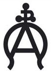
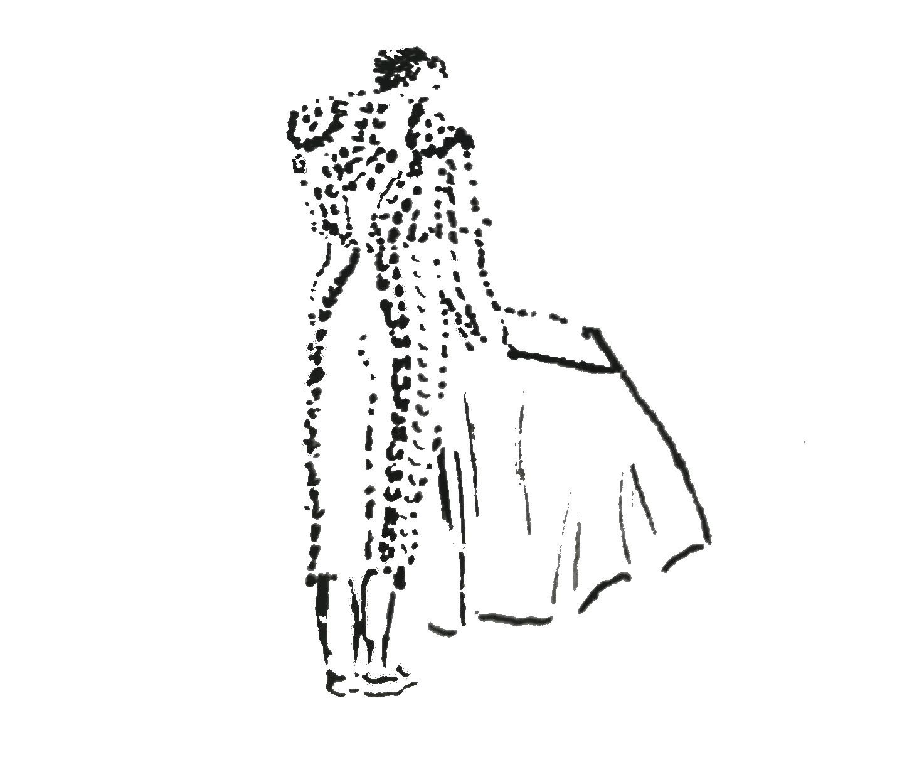
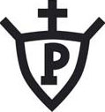
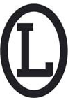
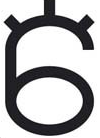

9
Sábado
 Canal Sur Televisión
Canal Sur Televisión
(18:00)
Villacarrillo (Jaén)
II Corrida Pictórica del Aceite
Toros de
Arauz de Robles
 Octavio Chacón
Octavio Chacón
Adrián de Torres
Francisco
de Manuel

 Castilla La Mancha Media
Castilla La Mancha Media
(18:00)
Villaseca de la Sagra (Toledo)
Certamen de Novilladas
Alfarero de Oro
Novillo de
La Quinta
Procedencia Conde de Santa Coloma
Novillo de
Pallares
Procedencia Santa Coloma
Novillo de
Pallarés
Novillo de
Rehuelga
Novillo de
Ana Romero
Novillo de
Flor de Jara
Novillo de
Los Maños
Alejandro
Peñaranda
Marcos Linares
Daniel Medina
Canal Extremadura
(18:30)
Villafranca de los Barros (Badajoz)
XI Ciclo de Novilladas
de la Diputación de Badajoz
Novillada sin picadores
Novillos de
Jandilla
Julio Méndez
Tomás Bastos
Jorge Hurtado